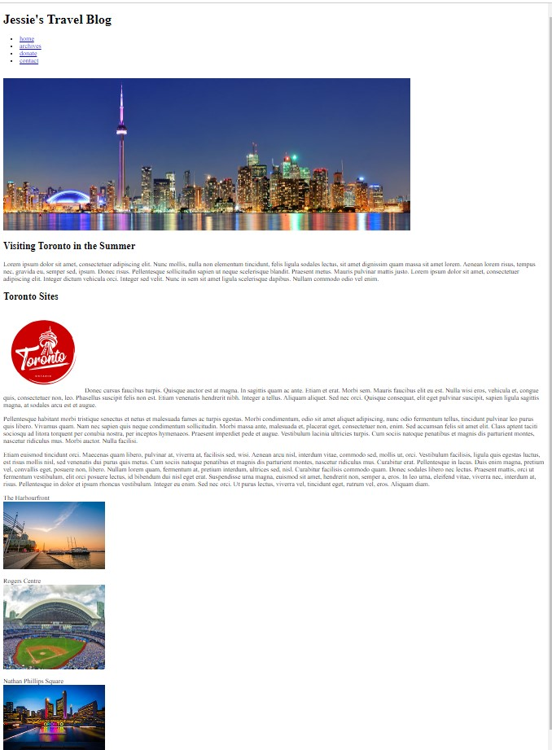
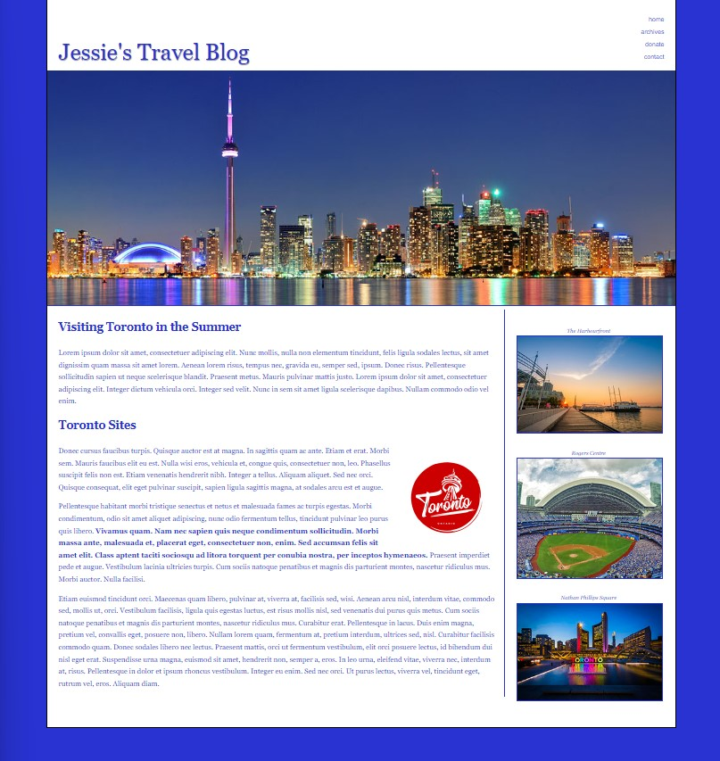

TEST 1 - PRACTICAL
PLEASE READ THE INSTRUCTIONS CAREFULLY
| Recreate the final screenshot shown below. |
|
Step 1 Coding the HTML file. You must finish coding the html file and link it to an external stylesheet file. I have coded some of the html file for you - feel free to modify if you wish. You need to finish the header with the h1, nav and banner image. Use HTML5 elements where possible. I have started the file using the HTML5 doctype. Make sure you address their display properties for older browsers. I have included the script for older versions of IE in the html code also. The first screenshot below shows what the html file should look like prior to any css styles applied. It is there so you can see if your html page is coded correctly before you move on to adding styles. |
|
Step 2 Coding the links. Edit the existing links to add the following:
|
|
Step 3 Styling the Page using an External CSS file. Create the 2 column layout using Flexbox. Do not use tables to create the layout. The wrap is set to 85%. Style for HTML5 elements in older browsers. Fonts and Colors etc...
You may utilize your class notes, examples and any notes posted under FOL content for the course, no talking with classmates. If you run into any problems be aware that there are part marks for everything. |
|
Step 4 Submitting your Work. When you are finished please zip your folder with all the files contained within it (the files downloaded plus the index.html and your css file). Upload your zip file to the Midterm Test 1 dropbox. |
|
Mark Breakdown:
|
html page before css is added

Final screenshot of the finished index.html file with css styles applied.

{kind=link}